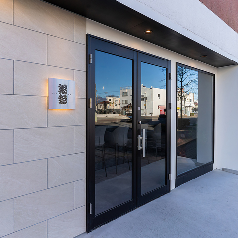
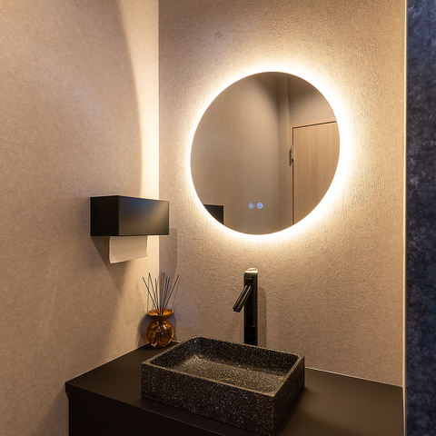

おすすめメニュー
お飲み物
空間へのこだわり

【駅近で立ち寄りやすい外観】
中央前橋駅から徒歩3分の好アクセス。シンプルながら印象に残る外観は初めての来店でもわかりやすく、
仕事帰りや食事の前後にも立ち寄りやすい立地です。街中の喧騒を忘れ、ふらっと立ち寄れる大人の隠れ家として親しまれています。

【距離が近いカウンター席】
1～3名での利用にちょうど良い上質なカウンター席をご用意。
職人の手仕事を目の前で眺めながら、出来立ての香りと音まで楽しめる特等席です。
全席をつなげれば10名様まで貸切宴会も可能で、気軽な飲み会から大人の集まりまで幅広く利用できます。

【ホテルライクな清潔感】
お手洗いはホテルのように清潔で上質な空間。
細部まで行き届いた清掃と設えで、どなたでも安心してご利用いただけます。
お店全体の心配りを感じられるポイントです。
店舗情報
群馬県前橋市にある、和の趣を大切にした居酒屋「銀彩」です。
ご予約
ネット予約はこちらから：
ホットペッパーグルメで予約する公式SNS
最新情報や店内の様子はInstagramでも発信中：
Instagramを見るお問い合わせ
営業時間：月～土: 11:00～14:00（料理L.O. 13:30 ドリンクL.O. 13:45）
17:00～23:00（料理L.O. 22:00 ドリンクL.O. 22:30）
電話：027-226-5655
定休日：日曜・祝日